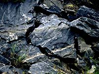
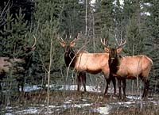
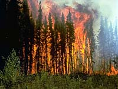
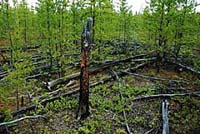
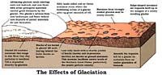
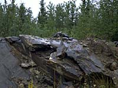
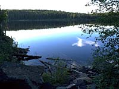

Growth of Forests
History of Forests
Sask. Development
Sask. Chronology
Canadian Development
Scientists estimate that the first plants appeared on Earth about 430 million years ago. From these plants, that looked much like mosses, evolved the trees and other plants that we know today. Forests are extensive land areas covered with trees and a forest community contains all the types of organisms inhabiting the area. |
 A forest can take thousands of years to develop. It starts with a stable plant community of lichens, liverworts, mosses and other pioneering plants. These plants help break down rock to form soil. |
 Ferns and small plants establish themselves and eventually become dominant, decreasing the number of pioneering plants. Larger shrubs and small trees begin to take over, become dominant (climax community) and form a forest. As the forest develops, other members of the ecosystem also change. For example, large animals that live in a mature forest cannot survive the early stages of forest development. |
 The forest remains stable until something (or someone) upsets the delicate balance. This could be a natural intervention of fire or other natural occurrence (such as volcanic activity as witnessed with the eruption of Mount St. Helen's in the early 1980s), disease or insect infestation, human intervention or even climatic change. |
 The process of change and subsequent rebuilding of the previous community is referred to as succession. Succession is best illustrated in an area where fire has raced through a forested area. Over time the forest rebuilds itself, naturally. Humans alter natural succession when reforesting an area. Reforestation is an important part of the forest industry to ensure regrowth of an area harvested by humans. |
History of Saskatchewan Forests
Saskatchewan forests developed following the last Ice Age. About 12,000 years ago glaciers covering the province began retreating northward. As the climate became warmer and drier, the boreal forest expanded to the north.
 The glacial meltwaters moved northward, leaving grasslands and two "island" forests of coniferous and deciduous trees, now called the Cypress Hills and Moose Mountain forests. |
 Saskatchewan has an abundance of forest resources. Approximately 288 000 km2 or 44 percent of the province is classified as forested land, of which 42 percent or 120 000 km2 is considered non-reserved, productive and available for timber management. Canada as a whole has 4 162 000 km2 of forested land, with about 57 percent considered available for forest production purposes. |
 Most of Saskatchewan's forests (96 percent) grow on provincial Crown lands, with private land accounting for three percent of forest reserves, and federal Crown land comprising the remaining one percent. |